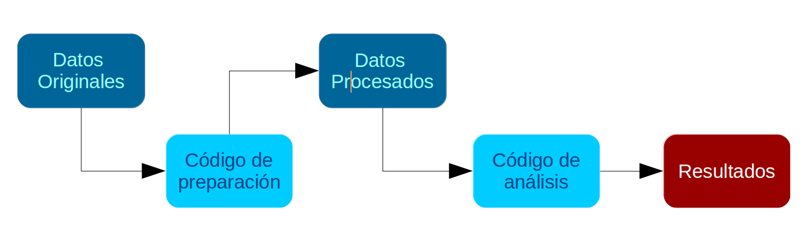
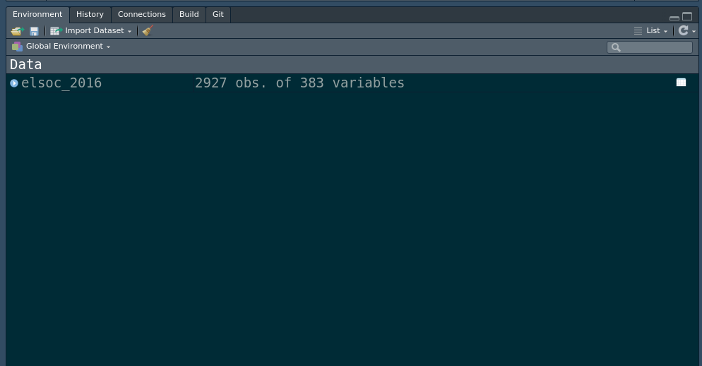

install.packages("pacman")Práctica 1. Preparación de datos en R
Correspondiente a la sesión del viernes, 18 de agosto de 2023
Presentación
Objetivo de la práctica
El desarrollo de esta guía tiene por objetivo revisar algunos procedimientos básicos de la preparación de datos con R, que son necesarios para luego poder aplicar los contenidos más específicos de este curso. Originalmente fue desarrollado para el curso de Estadística Multivariada, disponible aquí
Por temas de orden y reproducibilidad, en este curso vamos a separar en dos momentos el trabajo con datos, y dos archivos de código correspondientes:
Preparación corresponde a lo que se conoce generalmente como “limpieza”, es decir, realizar las modificaciones necesarias para poder efectuar los análisis. Estas modificaciones previas al análisis son necesarias ya que los datos originales con los que se va a trabajar en general no vienen perfectamente adaptados a los análisis que se quieren hacer. Por lo tanto, en cuanto a datos también hacemos la distinción entre datos originales y datos preparados (o procesados).
Análisis: se relaciona tanto con análisis descriptivos asociados a las preguntas de investigación y como también modelamiento de datos para contrastar hipótesis de investigación.
Los procesos de preparación y análisis vinculados a datos y resultados se presentan en el siguiente esquema:

Tanto la preparación como el análisis (que son parte del concepto más general de procesamiento) quedan registrados cada en un archivo de código. Los detalles de este tipo de archivos se pueden revisar aquí.
Archivo de código R
Archivo con extensión .R donde se almacena el código de análisis. Para generarlo desde RStudio: File > New File > R Script (o ctrl+shift+N), y para grabarlo File > Save (o ctrl+s), y darle nombre la primera vez (recordar: sin tilde ni ñ, y evitar espacios)
El documento de código de preparación posee 5 partes, más una sección de identificación inicial:
- Identificación y descripción general: Título, autor(es), fecha, información breve sobre el contenido del documento
- Librerías: cargar librerías a utilizar
- Datos: carga de datos
- Selección de variables a utilizar
- Procesamiento de variables: en este punto, por cada variable se realiza lo siguiente:
- Descriptivo básico
- Recodificación: (datos perdidos y valores (en caso de ser necesario)
- Etiquetamiento: de variable y valores (en caso de ser necesario)
- Otros ajustes
- Generación de base de datos preparada para el análisis.
Al final de esta práctica la idea es que cada un_ elabore y entienda su propio documento de preparación de datos.
En el ejemplo vamos a procesar variables de meritocracia y estatus (objetivo y subjetivo) utilizando los datos de la encuesta ELSOC .
Antecedentes de los datos a utilizar
El Estudio Longitudinal Social de Chile (ELSOC) es una encuesta desarrollada para analizar longitudinalmente la evolución del conflicto y cohesión en la sociedad chilena.
Uno de los módulos de ELSOC es “Desigualdad y Legitimidad”. Este módulo busca estudiar las percepciones y atribuciones asociadas a las desigualdades sociales. Se ve motivado por el interés de comprender cómo las personas perciben, legitiman y reproducen las diferencias de ingresos, estatus y poder presentes en el Chile contemporáneo.
El presente ejercicio tiene por objetivo el procesar los datos para obtener las variables relevantes para el estudio de la Percepción de Meritocracia, entendida como el grado en que los individuos consideran que su sociedad cumple con los principios de una meritocracia, es decir, que funciona como un sistema que asigna recompensas en función del esfuerzo y las habilidades. Para ello, junto con variables de meritocracia, consideraremos también variables de estatus (educación y estatus subjetivo), y variables de caracterización sociodemográfica (sexo y edad).
Preparación de datos ELSOC 2016
1. Librerías principales (de R) a utilizar en el análisis
Como sabemos, la lógica de R es instalar librerías (solo 1 vez, con install.packages("librería")), y luego cargarlas cada vez que es necesario usarlas (con library(librería)). El problema de esto es que a veces no se sabe claramente qué librerías están instaladas y cuales no, lo que va a arrojar error al cargarlas. Y, como sucede en R, existe una librería para solucionar este problema que se llama pacman (package manager). Lo que hace pacman es cargar la librería, y si no está instalada, la instala y la carga.
Para utilizar la primera vez (si es que no está instalada):
Y en adelante, las librerías se cargan así:
pacman::p_load(libreria1,libreria2,libreriaX)Para esta sesión vamos a utilizar Las librerías que vamos a utilizar son:
dplyr: ajuste general de datossjmisc: descripción y exploración de base de datoscar: principalmente la funciónrecodepara recodificar/agrupar valores de variablesjlabelled: para funciones específicas con datos etiquetadosstargazer: para tabla descriptivahaven: para abrir bases de datos en distintos formatos
pacman::p_load(dplyr, sjmisc, car, sjlabelled, stargazer)2. Cargar base de datos
Ajustar espacio de trabajo
Previo a la carga de nuestra base de datos, se recomienda ejecutar los siguientes comandos:
rm(list=ls()) # borrar todos los objetos en el espacio de trabajo
options(scipen=999) # valores sin notación científicaLa función rm(list=ls()) permite comenzar con un espacio de trabajo (environment) vacío y sin otros objetos. Así también, la función options(scipen=999) desactiva la notación científica, es decir, veremos los valores numéricos con todos sus decimales.
Datos
Las bases de datos se pueden cargar de un archivo local o en línea. Para este caso utilizaremos un archivo en línea que viene en formato RData: ELSOC_W01_v3.10.RData.
Abrir bases de datos en otros formatos**
Los formatos mas comunes en que se almacenan las bases de datos son .dta (Stata) y .sav (Spss). Para abrir desde R utlilizamos la librería haven y sus funciones read_dta y read_sav según corresponda. Ej: datos <- read_dta("base_casen.dta"). Recordar antes instalar/cargar la librería: pacman::p_load(haven)
Cargamos la base de datos desde internet
load(url("https://multivariada.netlify.com/assignment/data/original/ELSOC_W01_v3.10.RData"))La base de datos aparece como un objeto en nuestro espacio de trabajo, con el nombre original con la que fue guardada (elsoc_2016):

Realizamos un chequeo básico de la lectura de datos: nombres de las variables y tamaño de la base en términos de casos y variables (en este ejemplo, 2927 casos y 383 variables).
dim(elsoc_2016) # dimension de la base[1] 2927 383Y si se quiere revisar en formato de planilla de datos:
View(elsoc_2016)3. Selección de variables a utilizar
Este paso consiste en crear un subset reducido de datos que contenga solo las variables de interés. Para ello:
- Se identifica el nombre de las variables que registran la información de preguntas o items del instrumento: esto aparece en el libro de códigos y/o en el cuestionario, o también se puede hacer buscando en la base de datos mediante alguna palabra clave asociada a la pregunta. Por ejemplo, si queremos buscar variables asociadas a educación, utilizamos la función
find_var(desjmisc, librería que cargamos en el paso 1), que nos entrega nombre de la variable en columna var.name. Por ejemplo, si buscamos alguna variable asociada al concepto esfuerzo:
find_var(data = elsoc_2016,"esfuerzo") col.nr var.name
1 158 c18_09
var.label
1 Grado de acuerdo: Las personas son recompensadas por sus esfuerzosNos informa que esta variable es la c18_09.
Mediante la función select de dplyr, seleccionamos cada una de nuestras variables de interés y creamos una nueva base con el nombre proc_elsoc, donde “proc” hace referencia a base procesada:
proc_elsoc <- elsoc_2016 %>% select(c18_09, # percepción meritocracia esfuerzo
c18_10, # percepción meritocracia talento
d01_01, # estatus social subjetivo
m01, # nivel educacional
m0_sexo,# sexo
m0_edad)# edad
# Comprobar
names(proc_elsoc)[1] "c18_09" "c18_10" "d01_01" "m01" "m0_sexo" "m0_edad"Mediante el comando get_label obtenemos el atributo label de las variables.
sjlabelled::get_label(proc_elsoc) c18_09
"Grado de acuerdo: Las personas son recompensadas por sus esfuerzos"
c18_10
"Grado de acuerdo: Las personas son recompensada por su inteligencia"
d01_01
"Estatus Social Subjetivo: Donde se ubicaria ud. en la sociedad chilena"
m01
"Nivel educacional"
m0_sexo
"Sexo del entrevistado"
m0_edad
"Edad del entrevistado" Podemos ver que son muy largas, por lo tanto, es necesario cambiarlas por etiquetas más cortas.
4. Procesamiento de variables
Para el procesamiento de cada variable se seguirá el siguiente flujo de trabajo:
- Descriptivo general
- Recodificación: de casos perdidos y otros valores (en caso necesario)
- Etiquetado: cambio de nombres de variables y valores (en caso necesario)
- Otros ajustes
Y se recomienda también un descriptivo final para revisar que el procesamiento de cada variable está ok.
4.1 Percepción de meritocracia
En ELSOC, las variables que permiten medir la percepción de las personas con respecto al funcionamiento de la meritocracia en Chile son las siguientes:
- [
c18_09]: “Grado de acuerdo: Las personas son recompensadas por sus esfuerzos” (1 = Totalmente en desacuerdo; 5 = Totalmente de acuerdo) - [
c18_10]: “Grado de acuerdo: Las personas son recompensadas por su inteligencia” (1 = Totalmente en desacuerdo; 5 = Totalmente de acuerdo)
a. Descriptivo
Para los descriptivos se utilizará la función frq, de la librería sjmisc:
frq(proc_elsoc$c18_09)Grado de acuerdo: Las personas son recompensadas por sus esfuerzos (x) <numeric>
# total N=2927 valid N=2927 mean=-3.06 sd=71.66
Value | Label | N | Raw % | Valid % | Cum. %
------------------------------------------------------------------------
-999 | No Responde (no leer) | 4 | 0.14 | 0.14 | 0.14
-888 | No Sabe (no leer) | 14 | 0.48 | 0.48 | 0.61
1 | Totalmente en desacuerdo | 357 | 12.20 | 12.20 | 12.81
2 | En desacuerdo | 1331 | 45.47 | 45.47 | 58.28
3 | Ni de acuerdo ni en desacuerdo | 497 | 16.98 | 16.98 | 75.26
4 | De acuerdo | 646 | 22.07 | 22.07 | 97.34
5 | Totalmente de acuerdo | 78 | 2.66 | 2.66 | 100.00
<NA> | <NA> | 0 | 0.00 | <NA> | <NA>frq(proc_elsoc$c18_10)Grado de acuerdo: Las personas son recompensada por su inteligencia (x) <numeric>
# total N=2927 valid N=2927 mean=-3.42 sd=74.36
Value | Label | N | Raw % | Valid % | Cum. %
------------------------------------------------------------------------
-999 | No Responde (no leer) | 2 | 0.07 | 0.07 | 0.07
-888 | No Sabe (no leer) | 18 | 0.61 | 0.61 | 0.68
1 | Totalmente en desacuerdo | 288 | 9.84 | 9.84 | 10.52
2 | En desacuerdo | 1163 | 39.73 | 39.73 | 50.26
3 | Ni de acuerdo ni en desacuerdo | 559 | 19.10 | 19.10 | 69.35
4 | De acuerdo | 814 | 27.81 | 27.81 | 97.16
5 | Totalmente de acuerdo | 83 | 2.84 | 2.84 | 100.00
<NA> | <NA> | 0 | 0.00 | <NA> | <NA>En ambas variables vemos valores asociados a la opción “No responde” (-999) y “No sabe” (-888), que corresponde definirlos como casos perdidos (en el caso de R, como casos NA). El resto de los valores y etiquetas se encuentran en orden, así que en la recodificiación solo nos haremos cargo de los casos perdidos.
b. Recodificación
Para recodificar utilizamos la función recode, de la librería car
proc_elsoc$c18_09 <- recode(proc_elsoc$c18_09, "c(-888,-999)=NA")
proc_elsoc$c18_10 <- recode(proc_elsoc$c18_10, "c(-888,-999)=NA")c - Etiquetado
Vamos a dar un nombre más sustantivo a las variables con la función rename, de la librería dplyr:
proc_elsoc <- proc_elsoc %>% rename("mesfuerzo"=c18_09, # meritocracia esfuerzo
"mtalento" =c18_10) # meritocracia talentoAdemás de cambiar el nombre, queremos cambiar la etiqueta de la variable.
get_label(proc_elsoc$mesfuerzo)[1] "Grado de acuerdo: Las personas son recompensadas por sus esfuerzos"proc_elsoc$mesfuerzo <- set_label(x = proc_elsoc$mesfuerzo,label = "Recompensa: esfuerzo")
get_label(proc_elsoc$mtalento)[1] "Grado de acuerdo: Las personas son recompensada por su inteligencia"proc_elsoc$mtalento <- set_label(x = proc_elsoc$mtalento, label = "Recompensa: talento")d. Otros ajustes
Para este caso vamos a crear una variable que sea el promedio de los dos items de meritocracia.
proc_elsoc$pmerit <- (proc_elsoc$mesfuerzo+proc_elsoc$mtalento)/2
summary(proc_elsoc$pmerit) Min. 1st Qu. Median Mean 3rd Qu. Max. NA's
1.000 2.000 2.500 2.654 3.500 5.000 29 get_label(proc_elsoc$pmerit)[1] "Recompensa: esfuerzo"Vemos que todavía tiene la etiqueta de la variable “Recompensa: esfuerzo”
proc_elsoc$pmerit <- set_label(x = proc_elsoc$pmerit, label = "Meritocracia promedio")Revisión final
Nuevamente un descriptivo de cada variable para confirmar que el procesamiento está ok:
frq(proc_elsoc$mesfuerzo)Recompensa: esfuerzo (x) <numeric>
# total N=2927 valid N=2909 mean=2.57 sd=1.05
Value | Label | N | Raw % | Valid % | Cum. %
------------------------------------------------------------------------
-999 | No Responde (no leer) | 0 | 0.00 | 0.00 | 0.00
-888 | No Sabe (no leer) | 0 | 0.00 | 0.00 | 0.00
1 | Totalmente en desacuerdo | 357 | 12.20 | 12.27 | 12.27
2 | En desacuerdo | 1331 | 45.47 | 45.75 | 58.03
3 | Ni de acuerdo ni en desacuerdo | 497 | 16.98 | 17.08 | 75.11
4 | De acuerdo | 646 | 22.07 | 22.21 | 97.32
5 | Totalmente de acuerdo | 78 | 2.66 | 2.68 | 100.00
<NA> | <NA> | 18 | 0.61 | <NA> | <NA>frq(proc_elsoc$mtalento)Recompensa: talento (x) <numeric>
# total N=2927 valid N=2907 mean=2.74 sd=1.06
Value | Label | N | Raw % | Valid % | Cum. %
------------------------------------------------------------------------
-999 | No Responde (no leer) | 0 | 0.00 | 0.00 | 0.00
-888 | No Sabe (no leer) | 0 | 0.00 | 0.00 | 0.00
1 | Totalmente en desacuerdo | 288 | 9.84 | 9.91 | 9.91
2 | En desacuerdo | 1163 | 39.73 | 40.01 | 49.91
3 | Ni de acuerdo ni en desacuerdo | 559 | 19.10 | 19.23 | 69.14
4 | De acuerdo | 814 | 27.81 | 28.00 | 97.14
5 | Totalmente de acuerdo | 83 | 2.84 | 2.86 | 100.00
<NA> | <NA> | 20 | 0.68 | <NA> | <NA>frq(proc_elsoc$pmerit)Meritocracia promedio (x) <numeric>
# total N=2927 valid N=2898 mean=2.65 sd=0.97
Value | Label | N | Raw % | Valid % | Cum. %
--------------------------------------------------------------------------
-999.00 | No Responde (no leer) | 0 | 0.00 | 0.00 | 0.00
-888.00 | No Sabe (no leer) | 0 | 0.00 | 0.00 | 0.00
1.00 | Totalmente en desacuerdo | 243 | 8.30 | 8.39 | 8.39
1.50 | 1.5 | 79 | 2.70 | 2.73 | 11.11
2.00 | En desacuerdo | 1041 | 35.57 | 35.92 | 47.03
2.50 | 2.5 | 222 | 7.58 | 7.66 | 54.69
3.00 | Ni de acuerdo ni en desacuerdo | 536 | 18.31 | 18.50 | 73.19
3.50 | 3.5 | 169 | 5.77 | 5.83 | 79.02
4.00 | De acuerdo | 528 | 18.04 | 18.22 | 97.24
4.50 | 4.5 | 38 | 1.30 | 1.31 | 98.55
5.00 | Totalmente de acuerdo | 42 | 1.43 | 1.45 | 100.00
<NA> | <NA> | 29 | 0.99 | <NA> | <NA>Sobre generación de índices: en este caso aplicamos un promedio simple de dos items, pero hay ciertas consideraciones adicionales a tener cuando existen casos perdidos y también cuando son más de 2 items. Para esto, revisar guía sobre índices y transformación de variables
4.2. Educación
- [
m01] = ¿Cuál es su nivel educacional? Indique el tipo de estudio actual (si estudia actualmente) o el último tipo aprobado (si no estudia actualmente).
a. Descriptivo
frq(proc_elsoc$m01)Nivel educacional (x) <numeric>
# total N=2927 valid N=2927 mean=4.57 sd=26.34
Value | Label | N | Raw % | Valid % | Cum. %
------------------------------------------------------------------------------------
-999 | No Responde (no leer) | 2 | 0.07 | 0.07 | 0.07
-888 | No Sabe (no leer) | 0 | 0.00 | 0.00 | 0.07
1 | Sin estudios | 37 | 1.26 | 1.26 | 1.33
2 | Educacion Basica o Preparatoria incompleta | 322 | 11.00 | 11.00 | 12.33
3 | Educacion Basica o Preparatoria completa | 297 | 10.15 | 10.15 | 22.48
4 | Educacion Media o Humanidades incompleta | 394 | 13.46 | 13.46 | 35.94
5 | Educacion Media o Humanidades completa | 857 | 29.28 | 29.28 | 65.22
6 | Tecnica Superior incompleta | 102 | 3.48 | 3.48 | 68.71
7 | Tecnica Superior completa | 381 | 13.02 | 13.02 | 81.72
8 | Universitaria incompleta | 186 | 6.35 | 6.35 | 88.08
9 | Universitaria completa | 303 | 10.35 | 10.35 | 98.43
10 | Estudios de posgrado (magister o doctorado) | 46 | 1.57 | 1.57 | 100.00
<NA> | <NA> | 0 | 0.00 | <NA> | <NA>b. Recodificación
- Datos perdidos:
proc_elsoc$m01 <- recode(proc_elsoc$m01, "c(-888,-999)=NA")- Valores
Recodificación de acuerdo a las categorías CINE 2011 (UNESCO)
1. Sin estudios = [CINE 0 ] = 1
2. Educacion Basica o Preparatoria incompleta = [CINE 0 ] = 1
3. Educacion Basica o Preparatoria completa = [CINE 1,2 ] = 2
4. Educacion Media o Humanidades incompleta = [CINE 3 ] = 3
5. Educacion Media o Humanidades completa = [CINE 3 ] = 3
6. Tecnico Superior incompleta = [CINE 5 ] = 4
7. Tecnico Superior completa = [CINE 5 ] = 4
8. Universitaria incompleta = [CINE 6 ] = 5
9. Universitaria completa = [CINE 6 ] = 6
10. Estudios de posgrado (magister o doctorado) = [CINE 7, 8] = 6# recodificacion usando funcion 'recode' de la libreria car
proc_elsoc$m01 <- car::recode(proc_elsoc$m01, "c(1,2)=1; c(3)=2;c(4,5)=3;c(6,7)=4;c(8,9,10)=5")Comprobar con un nuevo descriptivo:
frq(proc_elsoc$m01)Nivel educacional (x) <numeric>
# total N=2927 valid N=2925 mean=3.18 sd=1.21
Value | Label | N | Raw % | Valid % | Cum. %
-------------------------------------------------------------------------------------
-999 | No Responde (no leer) | 0 | 0.00 | 0.00 | 0.00
-888 | No Sabe (no leer) | 0 | 0.00 | 0.00 | 0.00
1 | Sin estudios | 359 | 12.27 | 12.27 | 12.27
2 | Educacion Basica o Preparatoria incompleta | 297 | 10.15 | 10.15 | 22.43
3 | Educacion Basica o Preparatoria completa | 1251 | 42.74 | 42.77 | 65.20
4 | Educacion Media o Humanidades incompleta | 483 | 16.50 | 16.51 | 81.71
5 | Educacion Media o Humanidades completa | 535 | 18.28 | 18.29 | 100.00
6 | Tecnica Superior incompleta | 0 | 0.00 | 0.00 | 100.00
7 | Tecnica Superior completa | 0 | 0.00 | 0.00 | 100.00
8 | Universitaria incompleta | 0 | 0.00 | 0.00 | 100.00
9 | Universitaria completa | 0 | 0.00 | 0.00 | 100.00
10 | Estudios de posgrado (magister o doctorado) | 0 | 0.00 | 0.00 | 100.00
<NA> | <NA> | 2 | 0.07 | <NA> | <NA>Se observa que los valores coinciden con la recodificación (los casos se acumulan entre las categorías 1 y 5), pero las etiquetas ahora no coinciden; se soluciona en el siguiente paso.
c. Etiquetado
Para re-etiquetar valores usamos la función set_labels, de la librería sjlabelled
proc_elsoc$m01 <- set_labels(proc_elsoc$m01,
labels=c( "Primaria incompleta menos"=1,
"Primaria y secundaria baja"=2,
"Secundaria alta"=3,
"Terciaria ciclo corto"=4,
"Terciaria y Postgrado"=5))Luego renombramos la variable con un nombre más sustantivo
proc_elsoc <- rename(proc_elsoc,"edcine"=m01)Además de cambiar el nombre, queremos cambiar la etiqueta de la variable.
get_label(proc_elsoc$edcine)[1] "Nivel educacional"proc_elsoc$edcine <- set_label(x = proc_elsoc$edcine,label = "Educación")4.3. Estatus subjetivo
a. Descriptivo
- [
d01_01]: “Estatus Social Subjetivo: Donde se ubicaria ud. en la sociedad chilena” (0 = el nivel mas bajo; 10 = el nivel mas alto)
frq(proc_elsoc$d01_01)
summary(proc_elsoc$d01_01)Estatus Social Subjetivo: Donde se ubicaria ud. en la sociedad chilena (x) <numeric>
# total N=2927 valid N=2927 mean=0.63 sd=57.67
Value | Label | N | Raw % | Valid % | Cum. %
--------------------------------------------------------------
-999 | No Responde (no leer) | 1 | 0.03 | 0.03 | 0.03
-888 | No Sabe (no leer) | 11 | 0.38 | 0.38 | 0.41
0 | 0 El nivel mas bajo | 44 | 1.50 | 1.50 | 1.91
1 | 1 | 84 | 2.87 | 2.87 | 4.78
2 | 2 | 207 | 7.07 | 7.07 | 11.86
3 | 3 | 439 | 15.00 | 15.00 | 26.85
4 | 4 | 677 | 23.13 | 23.13 | 49.98
5 | 5 | 975 | 33.31 | 33.31 | 83.29
6 | 6 | 310 | 10.59 | 10.59 | 93.88
7 | 7 | 116 | 3.96 | 3.96 | 97.85
8 | 8 | 37 | 1.26 | 1.26 | 99.11
9 | 9 | 4 | 0.14 | 0.14 | 99.25
10 | 10 El nivel mas alto | 22 | 0.75 | 0.75 | 100.00
<NA> | <NA> | 0 | 0.00 | <NA> | <NA>
Min. 1st Qu. Median Mean 3rd Qu. Max.
-999.0000 3.0000 5.0000 0.6338 5.0000 10.0000 b. Recodificación
proc_elsoc$d01_01 <- recode(proc_elsoc$d01_01, "c(-888,-999)=NA")c. Etiquetado
- Cambio de nombre de variable a etiqueta más sustantiva ess (estatus social subjetivo)
proc_elsoc <- proc_elsoc %>% rename("ess"=d01_01) # estatus social subjetivoAdemás de cambiar el nombre, queremos cambiar la etiqueta de la variable.
get_label(proc_elsoc$ess)[1] "Estatus Social Subjetivo: Donde se ubicaria ud. en la sociedad chilena"proc_elsoc$ess <- set_label(x = proc_elsoc$ess,label = "Estatus Social Subjetivo")4.4. Sexo
- [
m0_sexo] = Indicar el sexo del entrevistado.
a. Descriptivo
frq(proc_elsoc$m0_sexo)Sexo del entrevistado (x) <numeric>
# total N=2927 valid N=2927 mean=1.60 sd=0.49
Value | Label | N | Raw % | Valid % | Cum. %
------------------------------------------------
1 | Hombre | 1163 | 39.73 | 39.73 | 39.73
2 | Mujer | 1764 | 60.27 | 60.27 | 100.00
<NA> | <NA> | 0 | 0.00 | <NA> | <NA>b. Recodificación
En general esta variable no tiene problemas de casos perdidos ni de etiquetas, pero de todas maneras vamos a hacer un cambio de acuerdo a convenciones en análisis de datos, donde por lo general hombres tienen valor 0 y mujeres 1:
proc_elsoc$m0_sexo <- car::recode(proc_elsoc$m0_sexo, "1=0;2=1")c. Etiquetado
Y ahora cambiamos las etiquetas de acuerdo a la recodificación anterior:
proc_elsoc$m0_sexo <- set_labels(proc_elsoc$m0_sexo,
labels=c( "Hombre"=0,
"Mujer"=1))También el nombre de la variable a algo más simple:
proc_elsoc <- rename(proc_elsoc,"sexo"=m0_sexo)Además de cambiar el nombre, queremos cambiar la etiqueta de la variable.
get_label(proc_elsoc$sexo)[1] "Sexo del entrevistado"proc_elsoc$sexo <- set_label(x = proc_elsoc$sexo,label = "Sexo")Revisar con un nuevo descriptivo:
frq(proc_elsoc$sexo)Sexo (x) <numeric>
# total N=2927 valid N=2927 mean=0.60 sd=0.49
Value | Label | N | Raw % | Valid % | Cum. %
------------------------------------------------
0 | Hombre | 1163 | 39.73 | 39.73 | 39.73
1 | Mujer | 1764 | 60.27 | 60.27 | 100.00
<NA> | <NA> | 0 | 0.00 | <NA> | <NA>4.5 Edad
- [
m0_edad] = ¿Cuáles su edad? (años cumplidos).
a. Descriptivo
frq(proc_elsoc$m0_edad)Edad del entrevistado (x) <numeric>
# total N=2927 valid N=2927 mean=46.09 sd=15.29
Value | Label | N | Raw % | Valid % | Cum. %
-------------------------------------------------------------
-999 | No Responde (no leer) | 0 | 0.00 | 0.00 | 0.00
-888 | No Sabe (no leer) | 0 | 0.00 | 0.00 | 0.00
18 | 18 | 19 | 0.65 | 0.65 | 0.65
19 | 19 | 32 | 1.09 | 1.09 | 1.74
20 | 20 | 26 | 0.89 | 0.89 | 2.63
21 | 21 | 39 | 1.33 | 1.33 | 3.96
22 | 22 | 49 | 1.67 | 1.67 | 5.64
23 | 23 | 44 | 1.50 | 1.50 | 7.14
24 | 24 | 51 | 1.74 | 1.74 | 8.88
25 | 25 | 46 | 1.57 | 1.57 | 10.45
26 | 26 | 44 | 1.50 | 1.50 | 11.96
27 | 27 | 51 | 1.74 | 1.74 | 13.70
28 | 28 | 58 | 1.98 | 1.98 | 15.68
29 | 29 | 47 | 1.61 | 1.61 | 17.29
30 | 30 | 66 | 2.25 | 2.25 | 19.54
31 | 31 | 48 | 1.64 | 1.64 | 21.18
32 | 32 | 64 | 2.19 | 2.19 | 23.37
33 | 33 | 55 | 1.88 | 1.88 | 25.25
34 | 34 | 55 | 1.88 | 1.88 | 27.13
35 | 35 | 67 | 2.29 | 2.29 | 29.42
36 | 36 | 70 | 2.39 | 2.39 | 31.81
37 | 37 | 46 | 1.57 | 1.57 | 33.38
38 | 38 | 57 | 1.95 | 1.95 | 35.33
39 | 39 | 37 | 1.26 | 1.26 | 36.59
40 | 40 | 57 | 1.95 | 1.95 | 38.54
41 | 41 | 58 | 1.98 | 1.98 | 40.52
42 | 42 | 67 | 2.29 | 2.29 | 42.81
43 | 43 | 54 | 1.84 | 1.84 | 44.65
44 | 44 | 45 | 1.54 | 1.54 | 46.19
45 | 45 | 53 | 1.81 | 1.81 | 48.00
46 | 46 | 77 | 2.63 | 2.63 | 50.63
47 | 47 | 56 | 1.91 | 1.91 | 52.55
48 | 48 | 72 | 2.46 | 2.46 | 55.01
49 | 49 | 53 | 1.81 | 1.81 | 56.82
50 | 50 | 69 | 2.36 | 2.36 | 59.17
51 | 51 | 55 | 1.88 | 1.88 | 61.05
52 | 52 | 69 | 2.36 | 2.36 | 63.41
53 | 53 | 57 | 1.95 | 1.95 | 65.36
54 | 54 | 76 | 2.60 | 2.60 | 67.95
55 | 55 | 72 | 2.46 | 2.46 | 70.41
56 | 56 | 76 | 2.60 | 2.60 | 73.01
57 | 57 | 53 | 1.81 | 1.81 | 74.82
58 | 58 | 57 | 1.95 | 1.95 | 76.77
59 | 59 | 44 | 1.50 | 1.50 | 78.27
60 | 60 | 57 | 1.95 | 1.95 | 80.22
61 | 61 | 33 | 1.13 | 1.13 | 81.35
62 | 62 | 33 | 1.13 | 1.13 | 82.47
63 | 63 | 49 | 1.67 | 1.67 | 84.15
64 | 64 | 39 | 1.33 | 1.33 | 85.48
65 | 65 | 60 | 2.05 | 2.05 | 87.53
66 | 66 | 39 | 1.33 | 1.33 | 88.86
67 | 67 | 39 | 1.33 | 1.33 | 90.19
68 | 68 | 35 | 1.20 | 1.20 | 91.39
69 | 69 | 32 | 1.09 | 1.09 | 92.48
70 | 70 | 37 | 1.26 | 1.26 | 93.75
71 | 71 | 29 | 0.99 | 0.99 | 94.74
72 | 72 | 28 | 0.96 | 0.96 | 95.70
73 | 73 | 42 | 1.43 | 1.43 | 97.13
74 | 74 | 39 | 1.33 | 1.33 | 98.46
75 | 75 | 37 | 1.26 | 1.26 | 99.73
77 | 77 | 1 | 0.03 | 0.03 | 99.76
78 | 78 | 3 | 0.10 | 0.10 | 99.86
80 | 80 | 1 | 0.03 | 0.03 | 99.90
81 | 81 | 1 | 0.03 | 0.03 | 99.93
88 | 88 | 2 | 0.07 | 0.07 | 100.00
<NA> | <NA> | 0 | 0.00 | <NA> | <NA>b. Recodificación: no es necesario en este caso
c. Etiquetado
Cambio del nombre de la variable a algo más simple:
proc_elsoc <- rename(proc_elsoc,"edad"=m0_edad)Además de cambiar el nombre, queremos cambiar la etiqueta de la variable.
get_label(proc_elsoc$edad)[1] "Edad del entrevistado"proc_elsoc$edad <- set_label(x = proc_elsoc$edad,label = "Edad")Recodificación de variables y casos perdidos de un conjunto de variables:
- Recodificación
Ejemplo: queremos recodificar un conjunto de variables que están medidas en la misma escala (ej: likert 1 a 5 muy en desacuerdo a muy de acuerdo) y pasarlas a dos categorías, donde 1 a 3 es bajo y 4 a 5 es alto:
data_cohes <- data_cohes %>% select(var1:var5) %>%
rec(rec = "1,2,3=1; 4,5=2",
val.labels = c("bajo", "alto"))En este caso se generarán en la misma base nuevas variables dicotomizadas con el mismo nombre más un sufijo _r. Si alternativamente se quiere reemplazar la variable recodificada en la misma variable (no recomendado) entonces agregar la opción suffix = ""
- Casos perdidos
Es muy común que una base de datos defina un mismo valor(es) para los casos perdidos, como por ejemplo -99. Para esto se puede utilizar la función set_na, por ejemplo :
data_cohes <- data_cohes %>%
set_na(pcohes01:pcohes12, na = c(-9:-1)) donde pcohes01:pcohes12 establece el rango de variables en la base a ser recodificados, y en na= se establecen los valores que pasan a NA.
5. Generación de base de datos procesada para el análisis
Antes de guardar la base procesada, revisamos nuevamente todas las variables con una tabla descriptiva general mediante la función stargazer (de la librería homónima)
Primero vamos a reformatear el objeto proc_elsoc como base de datos (as.data.frame), paso necesario para que sea reconocido como tal por stargazer
proc_elsoc <-as.data.frame(proc_elsoc)
stargazer(proc_elsoc, type="text")
===========================================
Statistic N Mean St. Dev. Min Max
-------------------------------------------
mesfuerzo 2,909 2.573 1.047 1 5
mtalento 2,907 2.739 1.060 1 5
ess 2,915 4.330 1.567 0 10
edcine 2,925 3.184 1.207 1 5
sexo 2,927 0.603 0.489 0 1
edad 2,927 46.091 15.287 18 88
pmerit 2,898 2.654 0.969 1.000 5.000
-------------------------------------------Si se desea modificar las columnas que aparecen en la tabla se puede ocupar la opción summary.stat, donde se pueden especificar:
- “max” maximum
- “mean” mean
- “median” median
- “min” minimum
- “n” number of observations
- “p25” 25th percentile
- “p75” 75th percentile
- “sd” standard deviation
Por ejemplo, si quiero una tabla solo con promedio, n, sd y p75: stargazer(data, type="text", summary.stat = c("mean", "n", "sd", "p75"))
- Guardar base de datos procesada: en carpeta local
::: {.callout-tip}La ruta hacia su carpeta local si está trabajando en windows debería ser algo como “C:/Users/Lenovo/Clases/y aquí nombre del archivo a grabar:::
El comando para guardar es save:
save(proc_elsoc,file = "[ruta hacia carpeta local en su computador]/ELSOC_ess_merit2016.RData")En este caso, seguimos una estructura de carpetas de datos, separando en una carpeta los datos originales, y en otra (proc) los datos procesados:
save(proc_elsoc,file = "assignment/data/proc/ELSOC_ess_merit2016.RData")De rutas, estructura de carpetas y otros
Encontrando la ruta a carpeta local: lo más fácil es crear la carpeta donde se desean guardar los datos desde el administrador de archivos del computador. Luego, posicionarse con el cursor sobre la carpeta y seleccionar “Propiedades”, en la ventana emergente debería aparecer la ruta hacia la carpeta en “Ubicación”. Copiar esa ruta y agregar al final el nombre de la carpeta (separada por slash)
Sobre los “slashes” (
\o/): en la ruta las carpetas y el archivo final aparecen separados por slashes, que según el sistema utilizado pueden ser slash (/) o backslash (\). En R por defecto se usa slash, pero en Windows backslash, por lo que si se usa Windows hay que reemplazarlos por backslash o también puede ser por un doble slash (//).Por temas de compatibilidad general, en las rutas se recomienda evitar tildes, eñes, espacios, mayúsculas y guiones bajos (_).
Estructura de carpetas: para mantener el orden se sugiere seguir un protocolo de estructura de carpetas de proyecto, para lo que recomendamos el protocolo IPO, y que se adapta al flujo de trabajo presentado al principio de este práctico. Básicamente son tres carpetas: input, procesamiento, output. En la carpeta input crear la subcarpeta data-orig para guardar datos originales, y data-proc para los procesados. En procesamiento se guardan los archivos de código y en output las tablas y los gráficos.
Archivo de código
El archivo de código R de esta práctica se puede descargar aquí
Bonus track: flujo de trabajo reproducible
(del curso Ciencia Social Abierta)